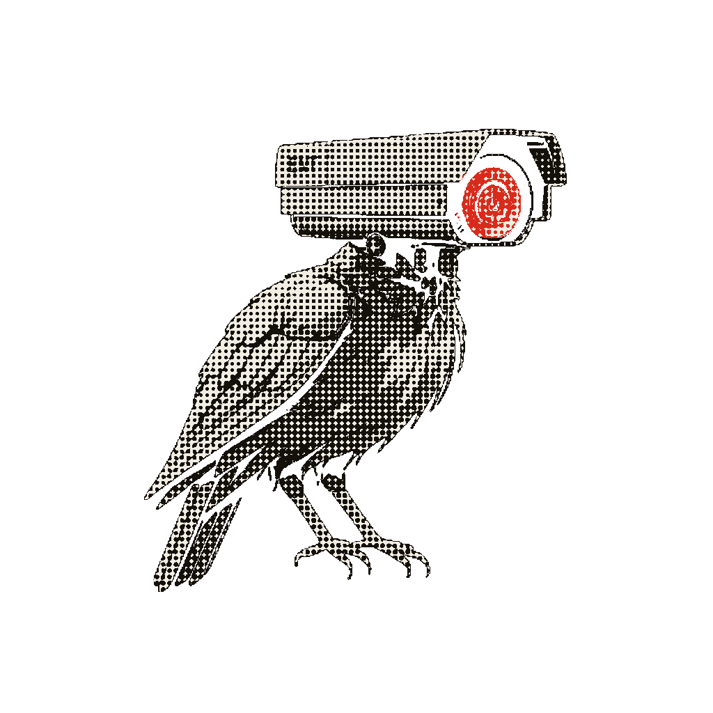

Breakthrough
universal community mark · pfp · both sets
Coin badge
marked set only · never beside wordmark · NEVER a pfp
Villain glyph
subject matter only · never identity · always intact

Mascot
sole doctrine-6 exception (ratified 2026-07-14) · pfp/logo allowed